Cada funil por dentro: página, VSL, checkout e upsell
5 VSLs transcritas (23 a 46 minutos), 4 checkouts abertos, 2 funis de quiz percorridos e 12 advertoriais/páginas europeias. Os livros que mais escalam são da mesma rede e seguem a mesma fórmula.
01A fórmula que se repete
| Etapa do funil | O que a rede Global Brother faz (Lost SuperFoods, Bug-In, Lost Skills, Amish Ways) | Natureza |
|---|---|---|
| 1. Anúncio | Vídeo vertical de truque/receita ou imagem da página do livro; texto longo; chamada "Learn more"; 40 a 800 anúncios ativos por livro, trocados toda semana. | observado |
| 2. Página | URL /book: carta de vendas longa (29 mil a 53 mil px no celular) com a VSL embutida, avaliações "Verified Purchase", "Last Books Available", "Due to recent events... surge in demand", bônus e garantia "keep the book". | observado |
| 3. VSL | 23 a 46 min, Wistia, versão vertical para celular. Lead de história ou demonstração; autoridade (ex-SEAL, ex-Amish, avô); medo histórico (fome, Grande Depressão); tour longo do produto; bônus; preço só nos últimos 20%. | observado |
| 4. Checkout | Digistore24 (checkout-ds24.com/globalbro): cupom aplicado, cronômetro de 5 min, bônus "grátis" de US$ 29 a 39, seletor de 1/2/3 cópias, Google Pay, cartão e PayPal, frete a parte. | observado |
| 5. Upsell | Não visível sem comprar. Indícios: SSB tem 3 upgrades (pacote médico, programa ampliado, pacote dos "Lost Books"); Digistore24 cita até US$ 155,20 por venda. | inferido |
| 6. Preço | US$ 27,75 a 39 na entrada (Black Friday); ticket médio informado pela Digistore24 de US$ 58,75 a 64,45. | observado |
02As 5 VSLs minuto a minuto
Duração medida no Wistia. A linha do tempo é resumo da transcrição (a transcrição inteira fica em dados, para consulta, nunca para copiar).
The Lost SuperFoods 30,7 min
| Minuto | O que acontece |
|---|---|
| 0 a 2 | Gancho: a supercomida da Guerra Fria que ainda é comestível 60 anos depois (demonstração). |
| 2 a 4 | Quem fala: avô/avós, "não sou doomsday, preparo como nossos avós". |
| 4 a 5 | Tese: dinheiro não se come; comida que não estraga vale mais numa crise. |
| 5 a 7 | História: "Fat Boris" na fome de Leningrado (quem guardou comida sobreviveu). |
| 7 a 9 | Inimigo: ninguém avisa antes da crise; kit de comida de emergência é golpe de 1.200 calorias. |
| 9 a 10 | Missão: salvar esse conhecimento antes que suma. |
| 10 a 22 | Produto: lista longa de comidas e receitas (fascinações), cada uma com uma história. |
| 23 a 24 | Bônus: estufa o ano todo e projetos para a casa. |
| 25 a 26 | Preço e por que barato ("não quero enriquecer"); garantia de honra. |
| 27 a 30 | Três opções, prova da família, chamada. |
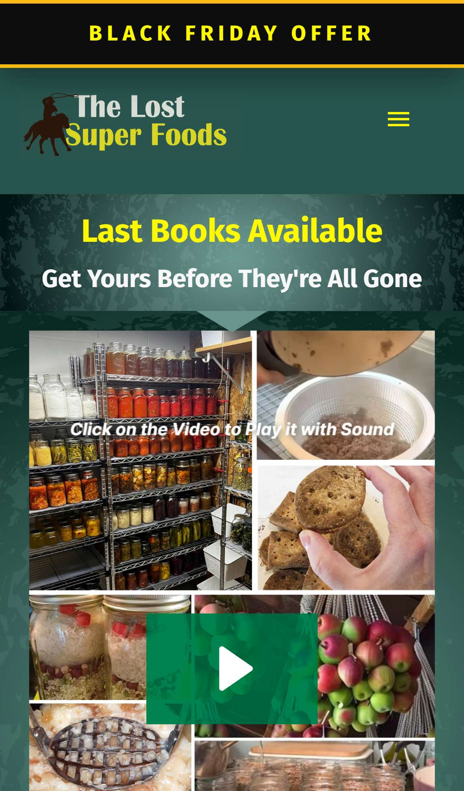
A Navy SEAL's Bug-In Guide 31,6 min
| Minuto | O que acontece |
|---|---|
| 0 a 10 | História longa: 3 amigos na Grande Depressão; quem se preparou em casa salvou os outros. |
| 10 | Revelação: "o primeiro guia de bug-in" (ficar em casa, não fugir). |
| 11 a 22 | Os 10 capítulos da "Life Pie": comida, água, segurança, energia, comunicação, remédios. |
| 23 | Bônus (4 acres, EMP do jeito dos pioneiros). |
| 24 | Escassez: tiragem pequena de livro impresso. |
| 25 | Preço, chamada e garantia. |
| 26 | Objeção: "dá para aprender sozinho" (tempo e dinheiro). |
| 27 a 31 | Recapitulação dos benefícios e chamada final. |
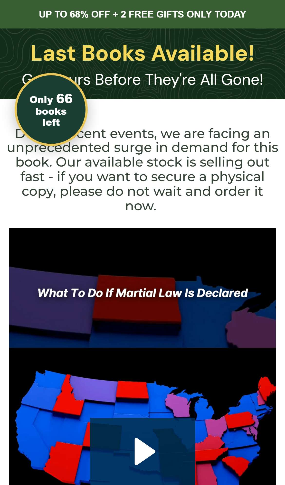
The Lost Skills of Independence 23,2 min
| Minuto | O que acontece |
|---|---|
| 0 a 2 | Gancho: "Por que não fazem mais livros assim?" e amostra rápida de habilidades. |
| 2 | Autoridade: instrutor do BUD/S, missões atrás das linhas inimigas. |
| 3 a 17 | Tour pelos capítulos com 1 exemplo concreto cada (defumador, ovos que duram, remédio). |
| 17 | Exclusividade: "não está no YouTube nem em lugar nenhum". |
| 18 | Envio e rastreio. |
| 19 a 22 | Patriotismo, saqueadores, legado para os filhos. |
| 23 | Preço e chamada. |
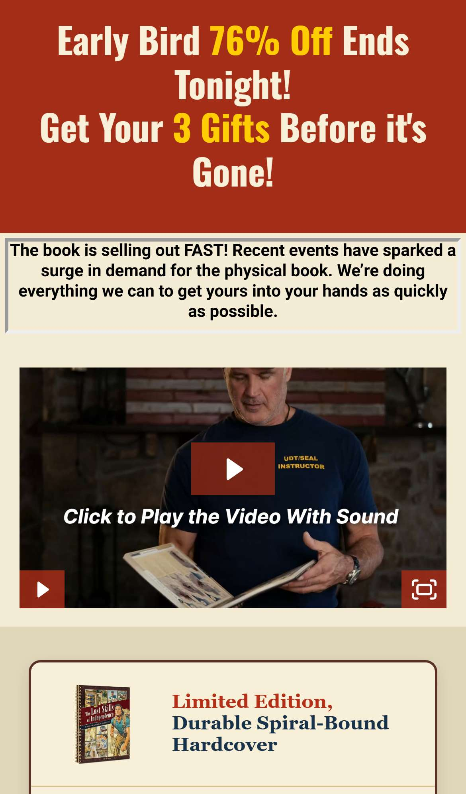
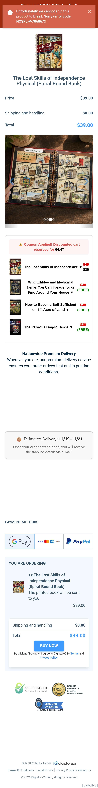
The Self-Sufficient Backyard 25,2 min
| Minuto | O que acontece |
|---|---|
| 0 a 3 | Promessa: casa que gera dinheiro e não fica sem energia num apagão ou EMP. |
| 3 a 9 | História: 40 anos fora da rede (cabana, lago no Canadá, terceira casa menor). |
| 10 a 18 | Tour pelos projetos (1.000 pés quadrados, ervas, energia, água, estufa, pomar). |
| 19 a 20 | Bônus. |
| 21 a 23 | Preço e "não precisa de terra nem de habilidade". |
| 24 a 25 | Garantia e despedida. |
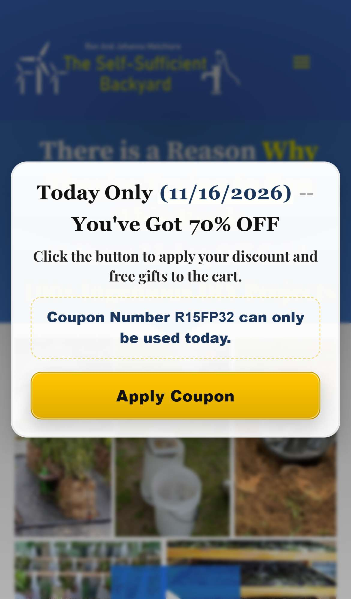
The Amish Ways 46,2 min
| Minuto | O que acontece |
|---|---|
| 0 a 2 | Demonstração: receita do hambúrguer Amish em conserva ("comida de sobrevivência não precisa ter gosto de papelão"). |
| 2 a 6 | Segredos que os Amish não mostram para quem é de fora. |
| 6 a 8 | Autor ex-Amish. |
| 8 a 10 | Medo: relato de fome com carroça de mortos. |
| 10 a 32 | Tour longo: geladeira sem energia, ibuprofeno natural, filtro sem energia, escambo, remédios, horta. |
| 33 a 35 | 3 presentes (bônus). |
| 36 a 37 | Preço (US$ 39 com US$ 40 de desconto). |
| 38 a 46 | Garantia, escassez de impressão, recapitulação e fechamento. |
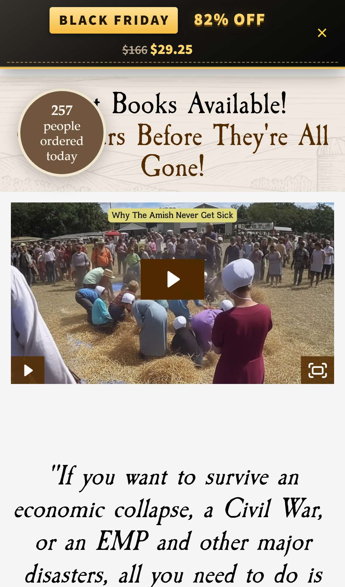
03Funis de quiz (livro grátis)
https://reports.homesteadingsecrets.com/survey-amish-survival-guide7bmn7z7l
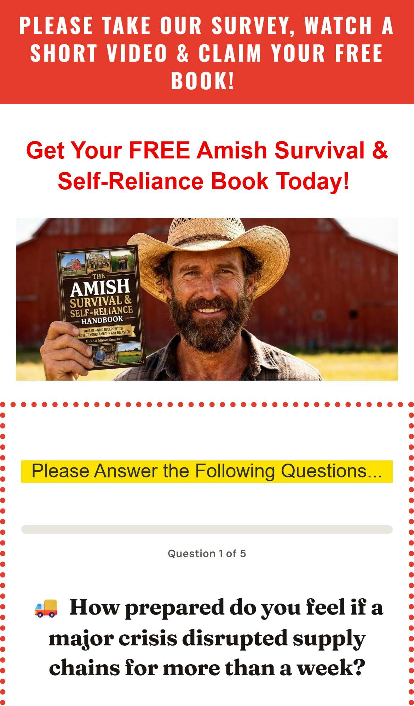
https://prep.royfoley.com/water-generator
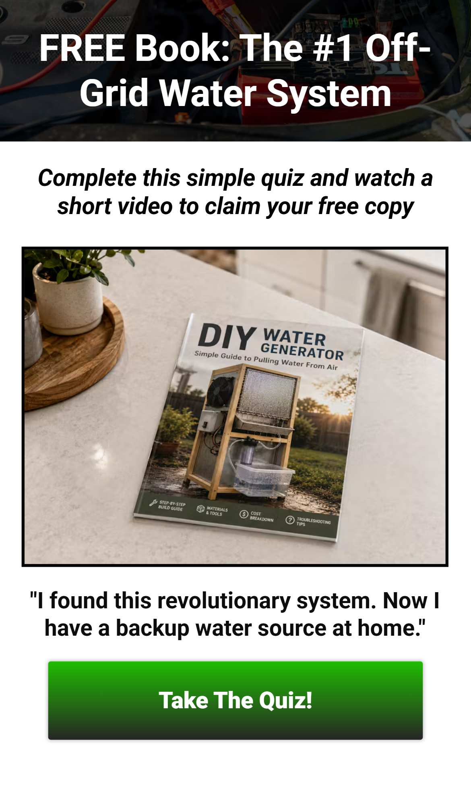
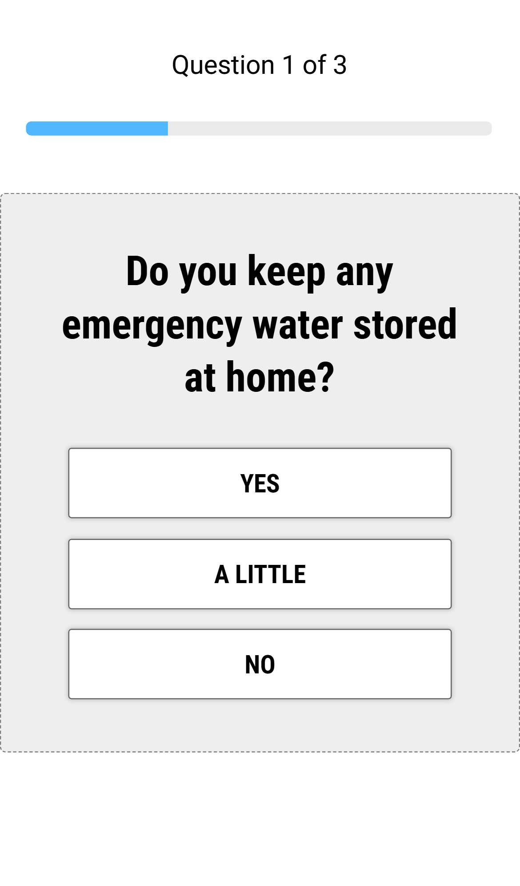
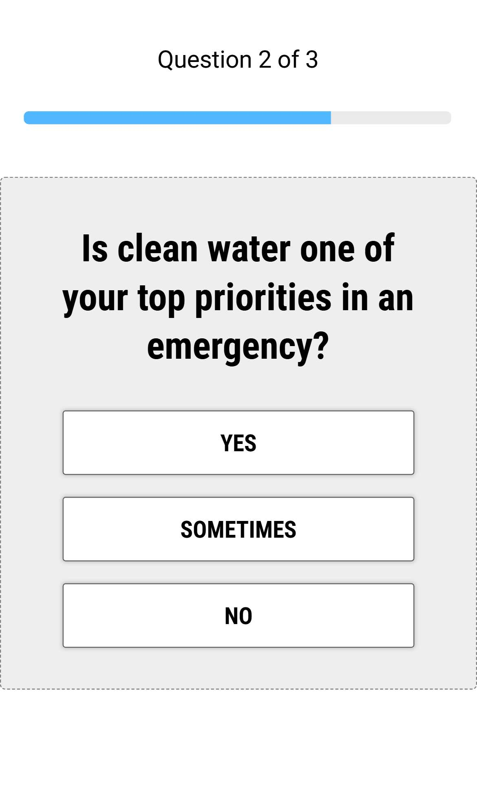
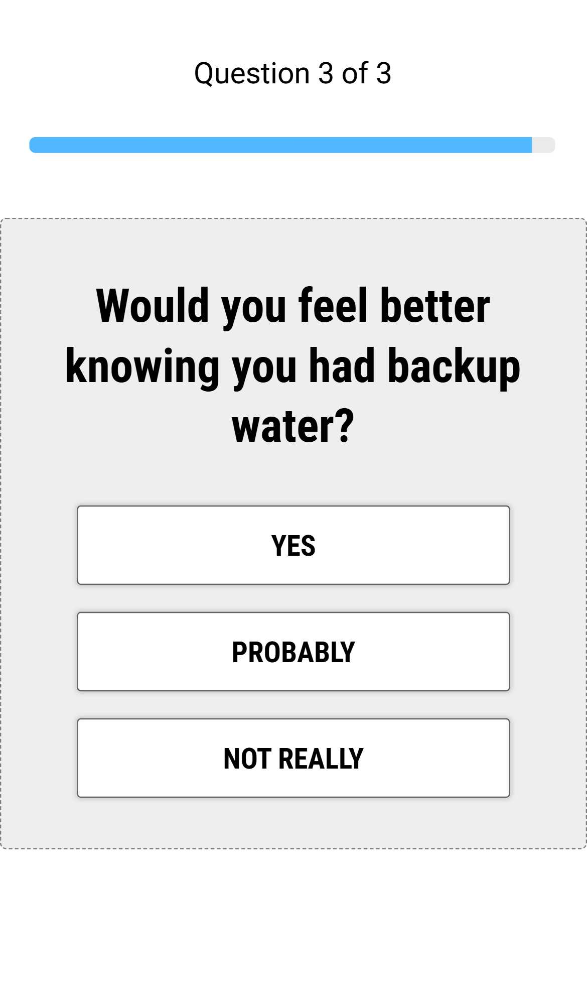
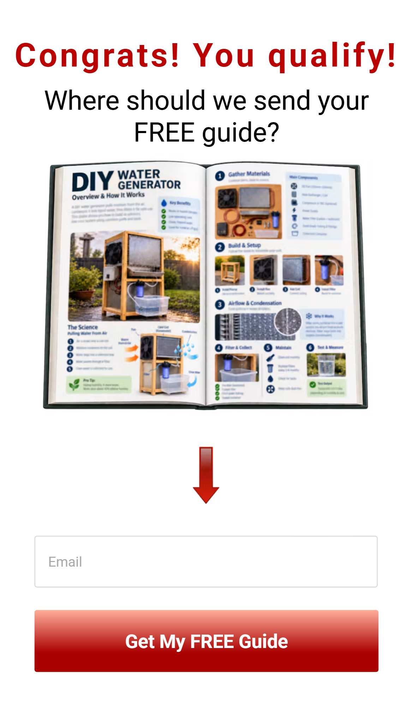
04Advertoriais e páginas europeias
Clique em "dossiê" para a ficha completa de cada um.
Ready Nation USA
história de um parente investigador + bolsa/filtro de água
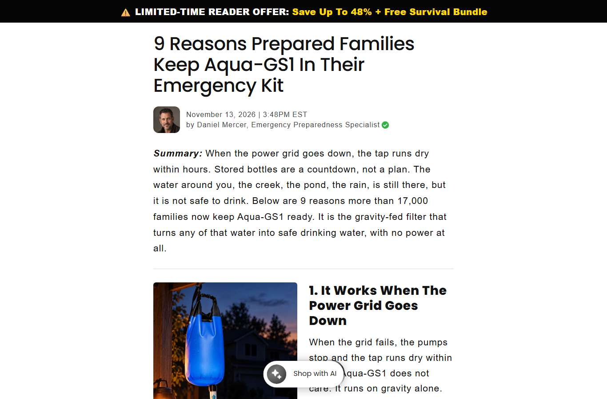
Blackout Water
"The Outsider": canudo filtro, 5 unidades 43% off, garantia 365 dias
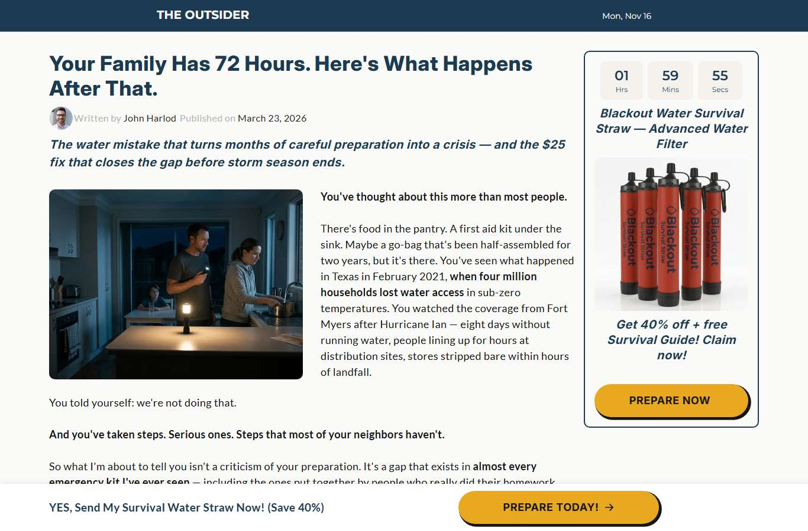
Ready Families Network
orientação oficial de 120 litros + filtro "compre 1 leve 2"
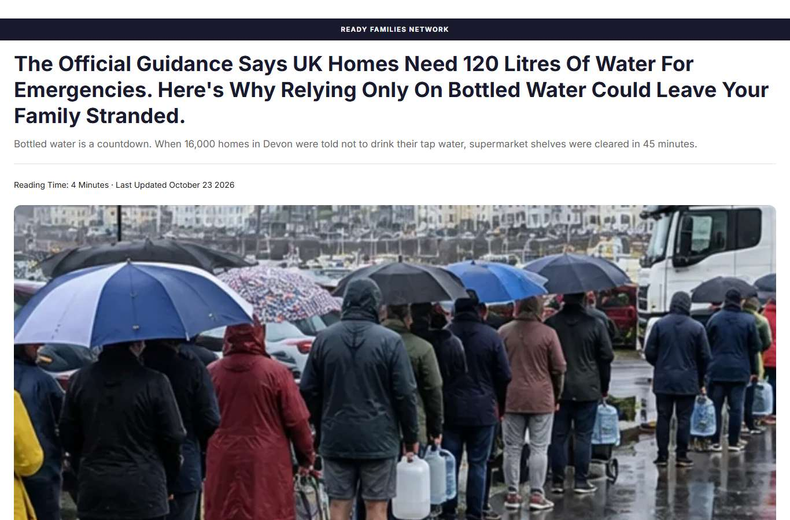
Notfall Kompass / Virest
filtro HYDRO-X1 19,99 a 359,94 €, 60 dias de garantia
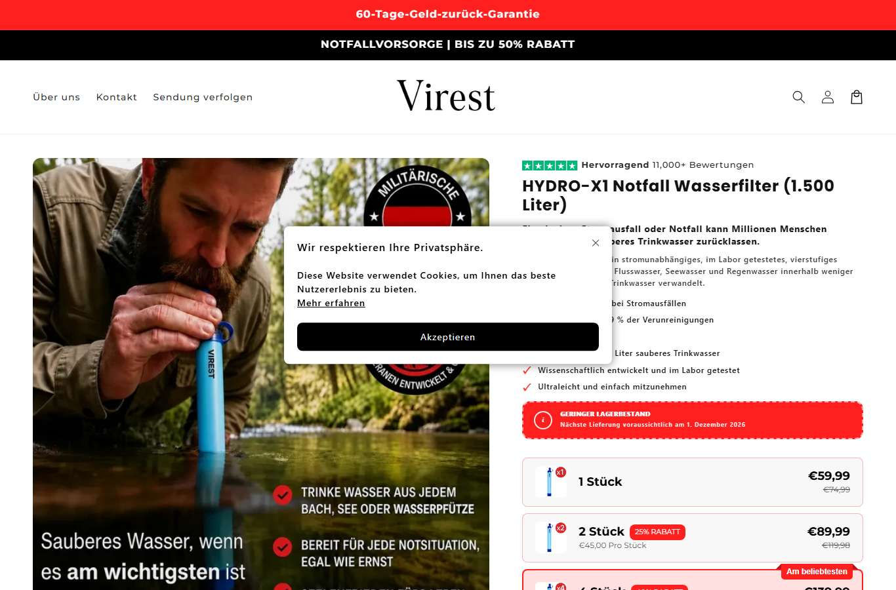
Casa Refugio
PDF imprimível de 72 h, US$ 14,90 (de 37), garantia 15 dias
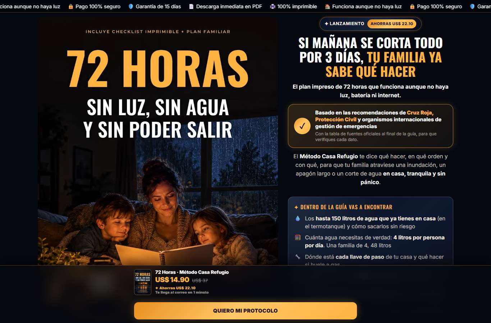
Le Manuel de Survie
PDF 383 páginas + 4 bônus, 29,99, garantia 30 dias
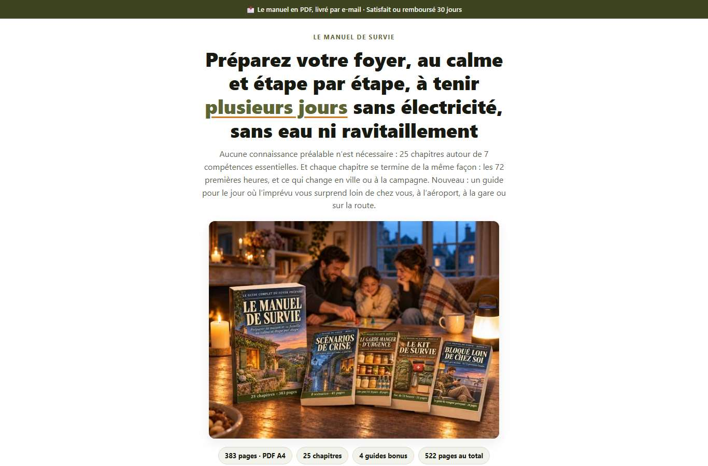
05Upsell e order bump
Detalhe com links na tela de ofertas validadas.